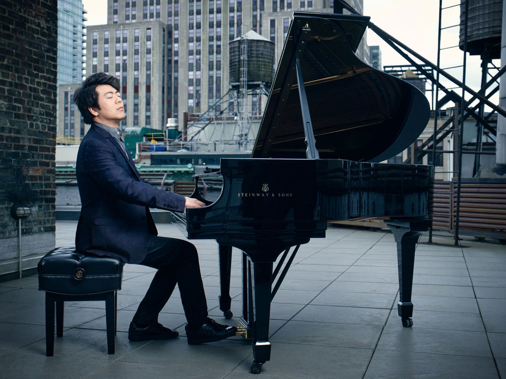

Lang Lang
Lang Lang the Chinese pianist that revolutionized the classical music world.
Who is Lang Lang?
Lang Lang is a prolific pianist that has done more for the classical music genre in the 21st century than most. He is a Chinese Pianist with goals of becoming the best with many world renowend recitals and performances to different awards only given to the best. Lang Lang is considered by most the best pianist alive.
Early Life
Lang began taking piano lessons at age three and gave his first public recital two years later. In 1991 he entered the Central Music Conservatory in Beijing. He soon began to attract wide attention as a musical prodigy. At age 13 he won first prize at the Tchaikovsky International Competition for Young Musicians in Japan and also appeared at the Beijing Concert Hall, where he performed the complete Chopin Études. The following year, in 1996, he was featured as a soloist at the China National Symphony Orchestra’s inaugural concert, with Pres. Jiang Zemin in attendance.
Leaving China for the United States in 1997, Lang enrolled at the Curtis Institute of Music in Philadelphia, where he had been offered a scholarship. For the next five years he studied under noted pianist Gary Graffman, president of the Curtis Institute. Lang’s pace of development was astonishing, and in 1998 he made his American debut with the Baltimore (Md.) Symphony Orchestra. In 1999, at the Ravinia Festival in Highland Park, Ill., Lang stepped in at the last moment for an ailing André Watts and earned rave reviews for his performance of Tchaikovsky’s Piano Concerto No. 1 in B-flat Minor with the Chicago Symphony Orchestra—and became famous virtually overnight.
Career
By the time he was in his early 20s, Lang had firmly established himself as one of the most prominent young talents on the international classical music scene. He had already performed with many of the leading American orchestras and conductors and had played in major concert halls across Europe, North America, and Asia. And hos now produced well over a dozen albums.
Lang Lang is now 37 and has no intentions of slowing down. He later married his current wife Gina Alice Redlinger